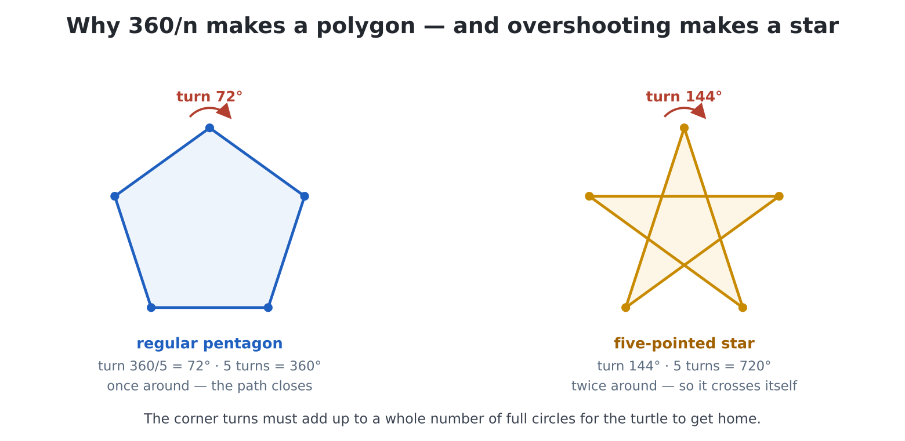

In 1967, computer scientists gave children a robot “turtle” that crawled across paper with a pen in its belly, steered by typed commands. The children didn’t learn drawing — they learned thinking: to draw a square you must be the turtle, walking and turning in your imagination. Sixty years later every serious teaching machine keeps a turtle, and yours is no exception. This chapter is where loops — last chapter’s machinery — stop being about numbers and become shape, pattern and beauty. It is also, quietly, the most important chapter in Part II: if loops have not fully clicked yet, the turtle will click them.
At the prompt:
>>> t = Turtle()
>>> t.reset()The first line deserves a proper introduction, because it is a shape
of Python you have been using on trust since chapter 2.
Turtle() is a maker: calling it
manufactures a fresh turtle and hands it back, and the =
catches it in a variable, exactly as chapter 6 taught — except this time
the value is not a number or a string but a thing that can do
things. From then on, t.reset() reads as “t,
reset yourself”: the dot means belonging to, and
commands attached to a thing this way are called its
methods. You have met the pattern before without the
formalities — led = Pin("LED", Pin.OUT) then
led.on() in chapter 2, f.write(...) in chapter
4, values.append(...) in chapter 8. Things you make, then
instruct through the dot: that is most of Python, and in chapter 14 you
will learn to design such things yourself. For today, one turtle, made
and named t.
The screen clears and the turtle sits at the centre, invisible, facing up, pen down. Now walk it:
>>> t.forward(100)
>>> t.right(90)
>>> t.forward(100)A line north, a quarter-turn clockwise, a line east — an L on the
screen, drawn by something you steered. Those three commands (plus
left and back) are practically the whole
language:
t.forward(d) / t.back(d) — move
d pixels, drawing as it goest.right(a) / t.left(a) — turn
a degrees (clockwise / counter-)t.penup() / t.pendown() — travel without /
with drawingt.pencolor(RED), t.pensize(3) — dress the
pen (palette names or 0xRRGGBB)One practical note: your typing shares the screen with the turtle,
and enough of it will scroll the picture. A few strokes at the prompt is
fine — anything you care about, put in a file and run
it.
Coming from MMBasic: this is the
TURTLEcommand set with the same conventions — home is the screen centre, heading 0 is up, andright()turns clockwise.
Walk a square, longhand:
t.forward(100)
t.right(90)
t.forward(100)
t.right(90)
t.forward(100)
t.right(90)
t.forward(100)
t.right(90)Eight lines of pure repetition — which last chapter taught you to
compress. edit("square.py"):
t = Turtle()
t.reset()
for _ in range(4):
t.forward(100)
t.right(90)(One small novelty: _ as the loop variable is the Python
convention for “I don’t use this value — I only want the repetition”.
You will see it everywhere.)
Run it, and appreciate what just happened: the loop is not a shortcut for the shape — the loop is the shape. “Four times: walk, quarter turn” is a definition of squareness, more honest than any picture of one. Every pattern in this chapter is a definition of this kind, and learning to read shapes as loops is the skill being smuggled in.
Why 90? Because after four corners the turtle must have turned all
the way round: 4 × 90 = 360. That one observation hands you
every regular shape — for n sides, turn
360 / n:
n = int(input("Sides? "))
t = Turtle()
t.reset()
for _ in range(n):
t.forward(60)
t.right(360 / n)Three gives a triangle, six a hexagon, twelve a dodecagon… and by 60
sides you cannot tell it from a circle — a genuinely deep fact about
circles, discovered by your turtle. (The turtle also has a true
t.circle(r), plus arcs, dots and more — the full table is
in the User Manual, section 5.)
Turn more than the polygon needs and the turtle crosses its own path. The five-pointed star is the famous one — five sides, but turning 144°:
t = Turtle()
t.reset()
t.pencolor(YELLOW)
for _ in range(5):
t.forward(150)
t.right(144)Why 144 works: five turns of 144° is 720° — two full revolutions, so the turtle winds around twice before closing, crossing itself into a star.

And once the angle is a variable, the door swings wide open:
angle = float(input("Angle? (try 100, 135, 144, 160, 170) "))
t = Turtle()
t.reset()
for _ in range(36):
t.forward(120)
t.right(angle)Every angle is a different creature — sharp bursts, woven rosettes, near-misses that spiral off. You are one input away from an art machine, and nobody, including the author, can predict them all.
Change the distance each lap instead, with chapter 6’s
+=:
t = Turtle()
t.reset()
t.pencolor(CYAN)
step = 2
for _ in range(80):
t.forward(step)
t.right(90)
step += 3A square spiral, blooming outward from the centre. Right angles give
a boxy nautilus; t.right(91) gives one with a slow, dreamy
twist — that stray degree accumulating lap after lap. Try 89, 60,
121.
Now the chapter’s real lesson in loop-craft. A loop inside a loop: the inner one draws a petal, the outer one repeats petals around the centre:
t = Turtle()
t.reset()
t.pencolor(MAGENTA)
for petal in range(12): # twelve petals...
for _ in range(4): # ...each petal is a small square
t.forward(70)
t.right(90)
# rotate a twelfth of a turn, next petal
t.right(30)Read it from the inside out: the inner for is
square.py, unchanged. The outer for says
do that twelve times, turning 30° between. Twelve squares in a
ring — a flower. The indentation tells you which loop owns which line:
t.right(30) belongs to the outer loop (one dedent), so it
runs once per petal, not once per side. Change 12 and 30 together (their
product staying 360) for denser or sparser blooms; change the inner loop
to a triangle or a star for a different species entirely.
If nested loops felt abstract in prose, look at the screen: the outer loop is the arrangement, the inner loop is the element. That sentence describes half the graphics in this book — rows of space invaders, grids of tiles, rings of petals.
The chapter’s ideas in one keepsake program.
edit("spiro.py"):
t = Turtle()
t.reset()
angle = float(input("Angle (89, 121, 144 and 160 are lovely): "))
steps = int(input("Steps (try 150): "))
t.pencolor(CYAN)
d = 4
for i in range(steps):
if i == steps // 3:
t.pencolor(MAGENTA)
elif i == 2 * steps // 3:
t.pencolor(YELLOW)
t.forward(d)
t.right(angle)
d += 1
t.penup()
t.goto(10, 10)A growing spiral (the d += 1), steered by whatever angle
its owner chooses, changing colour at the one-third and two-thirds marks
(chapter 7, earning a living in art school). The last two lines are good
manners: pen up and step to the top-left corner, so the turtle’s final
position doesn’t matter and the prompt reappears out of the way.
(goto(x, y) jumps to an absolute pixel — (0, 0) is the
screen’s top-left corner, and home is the centre.)
Run it for people. Watching a pattern emerge line by line is the whole magic of this machine, and you built the machine that does it.
pendown()/penup()
using if i % 2 == 0 inside a for — chapter 8’s
remainder trick, visible at last.penup, goto a random
pixel (random.randint(0, 639) across,
random.randint(0, 479) down), pick a colour with an
if/elif on random.randint(1, 3),
and t.dot(6). Instant party.range(6) with right(120) collapses into a
triangle. Six-pointed stars refuse to be drawn in one stroke (ask any
geometer) — draw two triangles instead, with a penup()
shuffle between them.push()/pop() in the manual’s table (save and
restore the turtle’s position and heading) will get the turtle back to
the flower’s centre afterwards.t.arc(radius, angle) (move
along a curve) in place of forward — box becomes
whirlpool.fillcolor, begin_fill and
end_fill. Use them to draw the five-pointed star filled
gold on a midnight background (hdmi.fill() or a huge filled
rectangle first). Two tools you weren’t taught, learned from a reference
table — a skill worth more than the star.fcircles, the top one in background colour — think about
order), and, on the horizon, the city skyline: a nested loop of
rectangles.goto, headings and arcs, planned on
paper first. Frame grade only: this one goes on the wall (chapter 15’s
save_image() will even make it a file… borrowed early.
save_image("art.bmp") — you heard it here first).